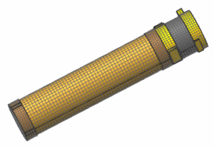

仅显示望远镜子装配有限元模型文件
 仿真导航器
仿真导航器
-

 Hessi Satellite AFM.afm (取消选中)
Hessi Satellite AFM.afm (取消选中) -
 Hessi Satellite AFM.afm(展开)
Hessi Satellite AFM.afm(展开) -
 Telescope Detector Unit AFM.afm(选中)
Telescope Detector Unit AFM.afm(选中) -
Telescope Unit AFM.afm(选中)
